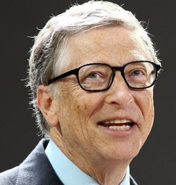
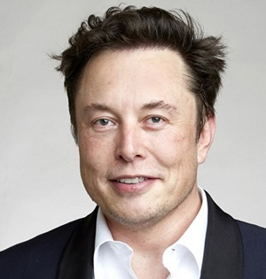
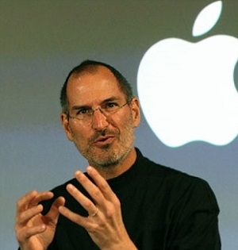

Bill Gates
William Henry Gates III (Seattle, Washington; 28 de octubre de 1955), mejor conocido como Bill Gates (AFI: [bil gejts]), es un empresario, informático y filántropo estadounidense, conocido por haber creado y fundado junto con Paul Allen, la empresa Microsoft. Es uno de los empresarios más conocidos que surgieron durante los inicios de los ordenadores personales. Su fortuna se calcula en 96.6 mil millones de dólares (2019) según la revista Forbes, hecho que le coloca como el cuarto hombre más rico del mundo.3 Antes del estallido de la burbuja de las punto com, su patrimonio neto ascendió a 114 100 millones de dólares.
Elon Musk
Elon Reeve Musk (Pretoria, Sudáfrica; 28 de junio de 1971) es un físico, emprendedor, inventor y magnate sudafricano, nacionalizado canadiense y estadounidense. Cofundador de PayPal, SpaceX, Hyperloop, SolarCity, The Boring Company, Neuralink y OpenAI. Es director general de SpaceX. Es director general de SpaceX, de Tesla Motors, presidente de SolarCity y copresidente de OpenAI. En enero de 2021 su fortuna se estima en 187 000 millones de dólares, lo que lo convierte en la persona más rica del mundo, superando al fundador de Amazon, Jeff Bezos. En enero del mismo año, Musk fue nombrado como la persona más rica del mundo por la revista Forbes.
Steve Jobs
Steven Paul Jobs (San Francisco, California; 24 de febrero de 1955-Palo Alto, California; 5 de octubre de 2011),891011 más conocido como Steve Jobs, fue un empresario y magnate de los negocios en el sector informático y de la industria del entretenimiento estadounidense. Fue cofundador y presidente ejecutivo de Apple12 y máximo accionista individual de The Walt Disney Company. En su segunda etapa en Apple, también cambió el modelo de negocio de la industria musical: aprobó el lanzamiento del iPod en 2001, y en 2003 la tienda On-line de música de iTunes, que en siete años vendió más de 10 000 millones de canciones y dominó completamente el negocio de música.